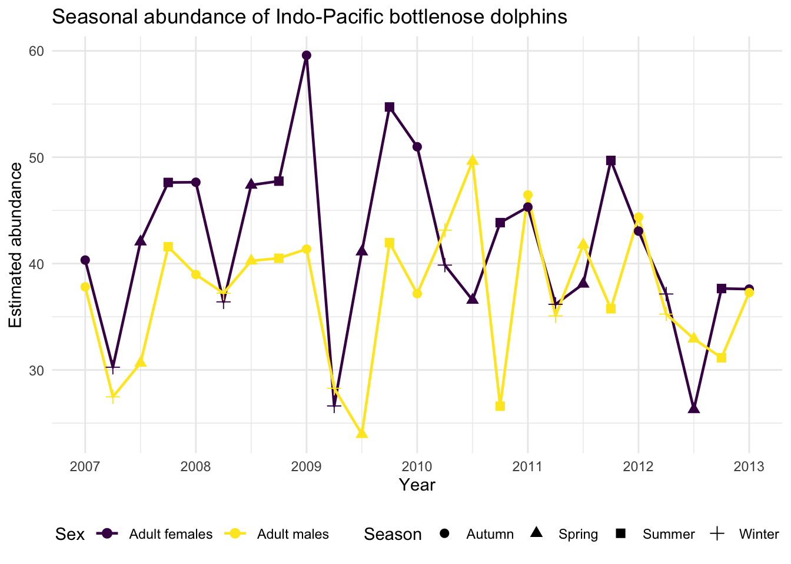

The original figure shows how the estimated abundance of adult female and male Indo-Pacific bottlenose dolphins varied across seasons and years from 2007 to 2013.
Flaws:
The original x-axis is overcrowded because every season is labelled vertically across multiple years, making the figure difficult to read quickly. The black and grey styling also makes the two sex groups harder to distinguish, especially where the lines overlap. In addition, the large error bars create visual clutter and compete with the abundance trends themselves.
Plot reconstruction
# Load packages needed for data wrangling, plotting, and project file pathslibrary(tidyverse)
── Attaching core tidyverse packages ──────────────────────── tidyverse 2.0.0 ──
✔ dplyr 1.2.0 ✔ readr 2.1.5
✔ forcats 1.0.1 ✔ stringr 1.6.0
✔ ggplot2 4.0.2 ✔ tibble 3.3.0
✔ lubridate 1.9.5 ✔ tidyr 1.3.2
✔ purrr 1.2.0
── Conflicts ────────────────────────────────────────── tidyverse_conflicts() ──
✖ dplyr::filter() masks stats::filter()
✖ dplyr::lag() masks stats::lag()
ℹ Use the conflicted package (<http://conflicted.r-lib.org/>) to force all conflicts to become errors
library(here)
here() starts at /Users/kylah/Desktop/Data & Analysis/MB5370/R4MarineScience
Rows: 50 Columns: 2
── Column specification ────────────────────────────────────────────────────────
Delimiter: ","
dbl (2): x, y
ℹ Use `spec()` to retrieve the full column specification for this data.
ℹ Specify the column types or set `show_col_types = FALSE` to quiet this message.
# Inspect the imported data structureglimpse(dolphin_data)
# Label the first 25 digitised points as females and the next 25 as malesdolphin_clean <- dolphin_data |>mutate(sex =if_else(row_number() <=25, "Adult females", "Adult males"),position =round(x))# Check the cleaned dataglimpse(dolphin_clean)
# A tibble: 6 × 4
x y sex position
<dbl> <dbl> <chr> <dbl>
1 0.932 40.3 Adult females 1
2 2.10 30.3 Adult females 2
3 3.19 42.1 Adult females 3
4 4.19 47.6 Adult females 4
5 5.34 47.6 Adult females 5
6 6.30 36.4 Adult females 6
tail(dolphin_clean)
# A tibble: 6 × 4
x y sex position
<dbl> <dbl> <chr> <dbl>
1 21.6 35.8 Adult males 22
2 22.7 44.4 Adult males 23
3 23.7 35.2 Adult males 24
4 24.9 32.9 Adult males 25
5 25.8 31.1 Adult males 26
6 27.0 37.3 Adult males 27
# Assign each digitised point to its correct sampling perioddolphin_clean <- dolphin_clean |>group_by(sex) |>mutate(time_index =row_number(),year =c(rep(2007:2012, each =4), 2013),season =c(rep(c("Autumn", "Winter", "Spring", "Summer"), 6), "Autumn")) |>ungroup()# Check that the year and season labels were assigned correctlydolphin_clean |>select(sex, time_index, year, season, y) |>head(10)
# Create a numeric time variable so seasons can be plotted within each yeardolphin_plot <- dolphin_clean |>mutate(time_numeric = year +case_when( season =="Autumn"~0, season =="Winter"~0.25, season =="Spring"~0.50, season =="Summer"~0.75))# Reconstruct the dolphin abundance figure with a cleaner and more accessible designggplot( dolphin_plot,aes(x = time_numeric,y = abundance,colour = sex,group = sex)) +geom_line(linewidth =0.8) +geom_point(aes(shape = season),size =2.5) +scale_colour_viridis_d() +scale_x_continuous(breaks =2007:2013) +labs(title ="Seasonal abundance of Indo-Pacific bottlenose dolphins",x ="Year",y ="Estimated abundance",colour ="Sex",shape ="Season") +theme_minimal() +theme(legend.position ="bottom")

Reconstructed figure
Improvement approach:
The figure was redesigned to make the temporal patterns easier to interpret by simplifying the x-axis, using contrasting colours for sex, and using different point shapes to retain seasonal information.
# Create a cleaner publication-style plot with improved colours and legend layoutggplot( dolphin_plot,aes(x = time_numeric,y = abundance,colour = sex,group = sex)) +geom_line(linewidth =0.9) +geom_point(aes(shape = season),size =2.7) +scale_colour_manual(values =c("Adult females"="#2C7FB8","Adult males"="#E76F51")) +scale_shape_manual(values =c("Autumn"=16,"Winter"=17,"Spring"=15,"Summer"=18)) +scale_x_continuous(breaks =2007:2013) +labs(title ="Seasonal abundance of Indo-Pacific bottlenose dolphins",subtitle ="Estimated abundance of adult females and males from 2007–2013",x ="Year",y ="Estimated dolphin abundance",colour ="Sex",shape ="Season",caption ="Approximate abundance values were extracted from the published figure using PlotDigitizer.") +theme_minimal(base_size =12) +theme(panel.grid.minor =element_blank(),legend.position ="right",legend.box ="vertical",legend.title =element_text(face ="bold"),plot.title =element_text(face ="bold")) +guides(colour =guide_legend(order =1),shape =guide_legend(order =2))
Figure caption:
Estimated seasonal abundance of adult female and male Indo-Pacific bottlenose dolphins from 2007 to 2013. Contrasting colours distinguish sex, while point shapes indicate season. Approximate abundance values were extracted from the published figure using PlotDigitizer.